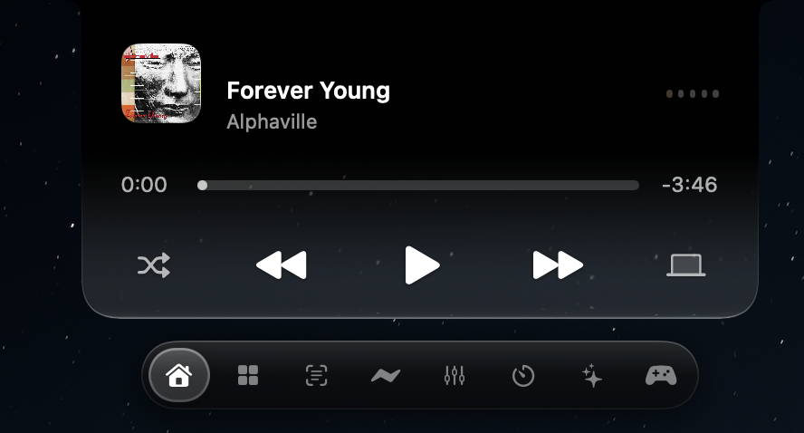

A soundtrack.
A little focus.
A clear desk.
Playback controls, a focus timer and a file shelf share a familiar, compact home.
Explore everyday tools ↗Meet Zenith, a dynamic notch for Mac. Music, focus, files and everyday controls, right where you need them.
macOS 26+ · Apple silicon · Currently in beta
Your wallpaper. Your atmosphere.
Beautifully at home on your Mac.

Liquid glass takes on the wallpaper behind it. Shown here on Peak in dark mode. Select a toolbar icon to explore what’s next.
Zenith turns the space around your Mac’s notch into a place for the things you reach for all day. Check a song. Set a timer. Move a file. Then get right back to what you were doing.
Playback controls, a focus timer and a file shelf share a familiar, compact home.
Explore everyday tools ↗Tune the glass, accent and motion. Arrange your floating shortcuts. Make the notch feel at home on your Mac.
Explore the design ↗A customizable lock-screen canvas, companion pets and an experimental 3D lid effect bring personality to the moments between tasks.
See personalization ↗Explore every feature category, with clear labels for beta tools, integrations and previews.
An independent app, with a name behind it. Explore Harsh’s other apps for the Apple ecosystem.
Zenith is in active beta development. The public DMG will be added when it is ready. For now, explore the features and follow the GitHub showcase.